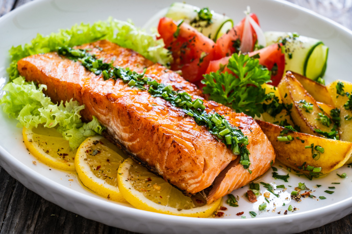

Servicio de Profesionales en la Gastronomía
Disfruta del lujo de un chef privado y eleva tu experiencia gastronómica sin salir de casa, siguiendo tus preferencias y restricciones.

Dietas Alimenticias Específicas
Cada comida es una combinación perfecta de sabor y nutrición, preparada con ingredientes frescos y con un profundo conocimiento de tus necesidades.
Comunicación Continua
Mantente al día con nuestros menús innovadores, ingredientes frescos y los beneficios nutricionales de cada plato. Tu opinión importa, y nos encanta escucharte para mejorar y adaptarnos a tus necesidades dietéticas.